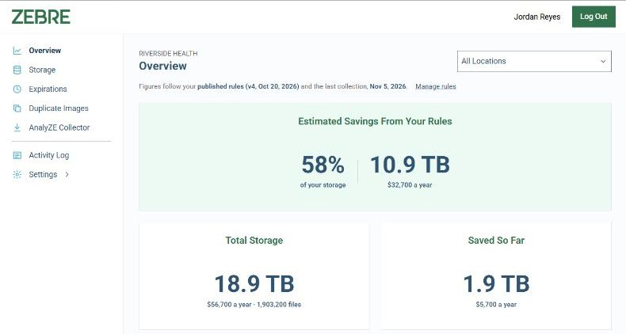
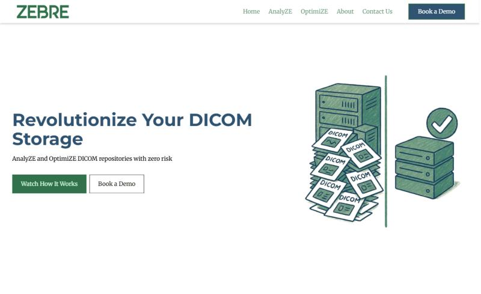

Healthcare imaging
Making the savings obvious in one look
A healthcare startup had technology that finds wasted space in hospital imaging archives, but no product around it: some early branding, no website, no interface. I designed the brand direction, the marketing site and the beta analytics product from a blank page, so a short trial scan turns into a clear answer: here's the storage you can free up, and here's what it's worth.
- My role: Product designer, sole designer
- Team: Rev3 Labs
- Status: Beta, in trials

The problem
Hospitals keep enormous imaging archives, and a lot of what's in them doesn't need to be there. Some studies are past the point they have to be kept. Others could be stored far more efficiently. The startup's patented technology can find both, but a scan result is just data. To win a customer, it has to become a number a buyer believes.
It's a high-touch sale, and the CEO is the sales team. He asks a hospital for a simple trial: let the scanner run on a sample of stored images, then see what it finds. The product had to make that conversation easy.
Who it's for
The people using it are hospital IT administrators. They know PACS systems, DICOM images and storage inside out, and they're used to dense, data-heavy enterprise tools.
That could have been an excuse to build another dense enterprise tool. I went the other way. Being comfortable with complexity doesn't mean wanting more of it, and a startup asking for a trial can't afford to look confusing. The product needed to be simple enough that the CEO could open it in a meeting and the value would be obvious before he said a word.
Starting from a blank page
I started with the founder: what the company does, who it sells to, and how it wants to sound. From there I explored brand and layout directions in Figma, showed variations, and iterated until the direction felt right. That work became the marketing site first, then the product.

Three decisions that shaped it
Lead with the answer
After a scan, the first thing on screen is two numbers, big and clear: the share of storage you can free up, and what that's worth in dollars. Everything else comes after. A buyer's first question is "is this worth my time?", and the screen answers it straight away.
Then show where the numbers come from
A big number on its own invites doubt, especially from technical buyers. So right under the headline, the product breaks the savings down: by kind of action, like studies that have expired and no longer need to be kept or images that can be optimized to take less space, and by modality, so they can see which parts of their archive drive the cost. The CEO can walk a prospect from "here's what you could save" to "here's exactly where it comes from," and the buyer can check the math.

The trade-off. A scan holds far more data than this shows. I kept the breakdown to what supports the decision and left deeper analysis for later, so the story stays clear in a sales meeting.
No patient data, anywhere
The scanner reads storage information, not patient information, and the design holds the same line. Nothing in the product, the demos or the design files shows patient names, record numbers, accession numbers or study dates. In a sale that runs on trust, that has to be obvious.
Designing for healthcare
- Accessibility. The target is WCAG AA. Color blindness has come up with prospective customers, so status and meaning never rely on color alone. Charts use patterns as well as color, and every number is written out.
- Rules before screens. As the product grows, I'm writing design-system rules alongside it, so new screens start consistent instead of being cleaned up later.
What's next
The first product shows what you could save. The second, now in design, lets you actually do it. Customers build their own rules for acting on what the scan found: by image type, by modality, by location, by age. Layer them up, and the service carries out the optimization.
That changes the main screen too. It will show estimated savings next to actual savings, and the gap between them: what's still available based on the rules a hospital hasn't put in place yet. The number that sold the trial becomes the number they watch shrink.
The marketing site is built in Webflow, with cookie consent so tracking only runs after a visitor agrees. The product runs on Angular, .NET and Azure.